library(tidyverse) # Pack of most used libraries for data science
library(skimr) # summary of the data
library(DataExplorer) # exploratory data analysis
library(corrplot) # correlation plots5 Exploratory Data Analysis
5.1 Intro
This chapter will show you how to use visualization and transformation to explore your data in a systematic way, a task that statisticians call exploratory data analysis, or EDA for short. EDA is an iterative cycle, where you should feel free to “fall in love” with your data.
You:
Generate questions about your data.
Search for answers by visualizing, transforming, and modelling your data.
Use what you learn to refine your questions and/or generate new questions.
Note: EDA is not a formal process with a strict set of rules!
See Wickham, Çetinaka-Rundel, and Grolemund (2017) for more, in particular the EDA chapter.
Do it yourself with R
Copy the script ExploratoryDataAnalysis.R and paste it in your session.
Run each line using CTRL + ENTER
5.2 Load packages
5.3 Dataset
The database used in this example is a treated database from the Mobility Survey for the metropolitan areas of Lisbon and Porto in 2018 (INE 2018). We will only focus on trips within the metropolitan area of Lisbon.
Included variables:
Origin_dicofre16- Code of Freguesia (district) as set by INE after 2016 (Distrito + Concelho + Freguesia), for trip originTotal- number of trips with origin at each districtWalk- number of walking tripsBike- number of bike tripsCar- number of car trips. Includes taxi and motorcycle.PTransit- number of Public Transit tripsOther- number of other trips (truck, van, tractor, aviation)Distance- average trip distance (km)Duration- average trip duration (minutes)Car_perc- percentage of car tripsN_INDIVIDUOS- number of residents (INE 2022)Male_perc- percentage of male residents (INE 2022)IncomeHH- average household incomeNvehicles- average number of car/motorcycle vehicles in the householdDrivingLic- percentage of car driving licence holdersCarParkFree_Work- percentage of respondents with free car parking at the work locationPTpass- percentage of public transit monthly pass holdersinternal- binary variable (factor).Yes: trip with same TAZ origin and destination,No: trips with different destinationLisboa- binary variable (factor).Yes: the district is part of Lisbon municipality,No: otherwiseArea_km2- area of inOrigin_dicofre16, in km2
5.3.1 Import dataset
data = readRDS("../data/IMOBmodel.Rds")Take a look at the dataset
View(data) # open in table
glimpse(data) # glimpse of the datasetRows: 236
Columns: 20
$ Origin_dicofre16 <chr> "110501", "110501", "110506", "110506", "110507", "11…
$ Total <dbl> 35539, 47602, 37183, 42313, 30725, 54586, 57747, 6788…
$ Walk <dbl> 11325, 3502, 12645, 1418, 9389, 2630, 20423, 3573, 62…
$ Bike <dbl> 1309, 416, 40, 163, 1481, 168, 1406, 809, 13, 37, 3, …
$ Car <dbl> 21446, 37727, 22379, 37337, 19654, 44611, 33044, 5225…
$ PTransit <dbl> 1460, 5519, 2057, 3285, 201, 6963, 2477, 10534, 110, …
$ Other <dbl> 0, 437, 63, 106, 0, 215, 396, 717, 2, 169, 3, 824, 0,…
$ Distance <dbl> 11.779, 11.779, 9.868, 9.868, 9.600, 9.600, 12.875, 1…
$ Duration <dbl> 23.96, 23.96, 22.78, 22.78, 23.39, 23.39, 26.89, 26.8…
$ Car_perc <dbl> 60.34497, 79.25507, 60.18611, 88.24002, 63.96745, 81.…
$ N_INDIVIDUOS <dbl> 44165, 44165, 59238, 59238, 46529, 46529, 64192, 6419…
$ Male_perc <dbl> 47.66, 47.66, 47.12, 47.12, 45.54, 45.54, 46.14, 46.1…
$ IncomeHH <dbl> 2204.32, 2204.32, 1896.05, 1896.05, 2430.43, 2430.43,…
$ Nvehicles <dbl> 1.86, 1.86, 1.73, 1.73, 1.60, 1.60, 1.64, 1.64, 1.20,…
$ DrivingLic <dbl> 63.03, 63.03, 65.42, 65.42, 67.05, 67.05, 72.75, 72.7…
$ CarParkFree_Work <dbl> 49.97, 49.97, 57.09, 57.09, 47.43, 47.43, 56.47, 56.4…
$ PTpass <dbl> 11.14, 11.14, 17.12, 17.12, 18.25, 18.25, 19.73, 19.7…
$ internal <fct> Yes, No, Yes, No, Yes, No, Yes, No, Yes, No, Yes, No,…
$ Lisboa <fct> No, No, No, No, No, No, No, No, Yes, Yes, Yes, Yes, Y…
$ Area_km2 <dbl> 39.767414, 39.767414, 20.364310, 20.364310, 8.109861,…str(data) # Structure of the dataset 'data.frame': 236 obs. of 20 variables:
$ Origin_dicofre16: chr "110501" "110501" "110506" "110506" ...
$ Total : num 35539 47602 37183 42313 30725 ...
$ Walk : num 11325 3502 12645 1418 9389 ...
$ Bike : num 1309 416 40 163 1481 ...
$ Car : num 21446 37727 22379 37337 19654 ...
$ PTransit : num 1460 5519 2057 3285 201 ...
$ Other : num 0 437 63 106 0 215 396 717 2 169 ...
$ Distance : num 11.78 11.78 9.87 9.87 9.6 ...
$ Duration : num 24 24 22.8 22.8 23.4 ...
$ Car_perc : num 60.3 79.3 60.2 88.2 64 ...
$ N_INDIVIDUOS : num 44165 44165 59238 59238 46529 ...
$ Male_perc : num 47.7 47.7 47.1 47.1 45.5 ...
$ IncomeHH : num 2204 2204 1896 1896 2430 ...
$ Nvehicles : num 1.86 1.86 1.73 1.73 1.6 1.6 1.64 1.64 1.2 1.2 ...
$ DrivingLic : num 63 63 65.4 65.4 67 ...
$ CarParkFree_Work: num 50 50 57.1 57.1 47.4 ...
$ PTpass : num 11.1 11.1 17.1 17.1 18.2 ...
$ internal : Factor w/ 2 levels "Yes","No": 1 2 1 2 1 2 1 2 1 2 ...
$ Lisboa : Factor w/ 2 levels "No","Yes": 1 1 1 1 1 1 1 1 2 2 ...
$ Area_km2 : num 39.77 39.77 20.36 20.36 8.11 ...5.4 Summary statistics
Have an overview of the variables and their statistics’ summary.
summary(data) # Check the summary statistics Origin_dicofre16 Total Walk Bike
Length:236 Min. : 361 Min. : 0.0 Min. : 0.00
Class :character 1st Qu.: 5918 1st Qu.: 763.2 1st Qu.: 0.00
Mode :character Median : 17474 Median : 3125.0 Median : 13.50
Mean : 22457 Mean : 5383.4 Mean : 107.03
3rd Qu.: 33378 3rd Qu.: 8298.5 3rd Qu.: 98.75
Max. :112186 Max. :32646.0 Max. :2040.00
Car PTransit Other Distance
Min. : 0 Min. : 0 Min. : 0.0 Min. : 6.835
1st Qu.: 3243 1st Qu.: 249 1st Qu.: 2.0 1st Qu.: 9.539
Median : 9008 Median : 1057 Median : 44.0 Median :10.323
Mean :13289 Mean : 3474 Mean : 203.4 Mean :11.139
3rd Qu.:21249 3rd Qu.: 4853 3rd Qu.: 281.5 3rd Qu.:12.097
Max. :52631 Max. :41672 Max. :2391.0 Max. :22.660
Duration Car_perc N_INDIVIDUOS Male_perc
Min. :16.30 Min. : 0.00 Min. : 1566 Min. :44.61
1st Qu.:23.00 1st Qu.:45.40 1st Qu.:11060 1st Qu.:46.58
Median :24.70 Median :62.62 Median :20855 Median :47.51
Mean :25.42 Mean :59.00 Mean :24324 Mean :47.54
3rd Qu.:27.73 3rd Qu.:75.72 3rd Qu.:36079 3rd Qu.:48.29
Max. :37.42 Max. :99.27 Max. :68649 Max. :55.94
IncomeHH Nvehicles DrivingLic CarParkFree_Work
Min. : 884.5 Min. :1.020 Min. :37.04 Min. : 5.47
1st Qu.:1417.8 1st Qu.:1.350 1st Qu.:57.67 1st Qu.:40.39
Median :1594.7 Median :1.545 Median :63.00 Median :50.51
Mean :1732.6 Mean :1.530 Mean :62.50 Mean :49.30
3rd Qu.:1953.5 3rd Qu.:1.670 3rd Qu.:68.84 3rd Qu.:57.92
Max. :3462.3 Max. :2.420 Max. :80.79 Max. :87.60
PTpass internal Lisboa Area_km2
Min. : 0.00 Yes:118 No :188 Min. : 1.494
1st Qu.:13.41 No :118 Yes: 48 1st Qu.: 5.044
Median :22.71 Median : 11.598
Mean :23.82 Mean : 25.553
3rd Qu.:32.94 3rd Qu.: 28.511
Max. :60.45 Max. :282.125 skim(data) # In a more organized way| Name | data |
| Number of rows | 236 |
| Number of columns | 20 |
| _______________________ | |
| Column type frequency: | |
| character | 1 |
| factor | 2 |
| numeric | 17 |
| ________________________ | |
| Group variables | None |
Variable type: character
| skim_variable | n_missing | complete_rate | min | max | empty | n_unique | whitespace |
|---|---|---|---|---|---|---|---|
| Origin_dicofre16 | 0 | 1 | 6 | 6 | 0 | 118 | 0 |
Variable type: factor
| skim_variable | n_missing | complete_rate | ordered | n_unique | top_counts |
|---|---|---|---|---|---|
| internal | 0 | 1 | FALSE | 2 | Yes: 118, No: 118 |
| Lisboa | 0 | 1 | FALSE | 2 | No: 188, Yes: 48 |
Variable type: numeric
| skim_variable | n_missing | complete_rate | mean | sd | p0 | p25 | p50 | p75 | p100 | hist |
|---|---|---|---|---|---|---|---|---|---|---|
| Total | 0 | 1 | 22457.00 | 19084.45 | 361.00 | 5917.75 | 17474.00 | 33377.50 | 112186.00 | ▇▃▂▁▁ |
| Walk | 0 | 1 | 5383.44 | 6224.84 | 0.00 | 763.25 | 3125.00 | 8298.50 | 32646.00 | ▇▂▁▁▁ |
| Bike | 0 | 1 | 107.03 | 248.65 | 0.00 | 0.00 | 13.50 | 98.75 | 2040.00 | ▇▁▁▁▁ |
| Car | 0 | 1 | 13289.24 | 12351.61 | 0.00 | 3243.00 | 9008.00 | 21248.75 | 52631.00 | ▇▃▂▁▁ |
| PTransit | 0 | 1 | 3473.79 | 5467.82 | 0.00 | 249.00 | 1057.00 | 4853.00 | 41672.00 | ▇▁▁▁▁ |
| Other | 0 | 1 | 203.45 | 336.04 | 0.00 | 2.00 | 44.00 | 281.50 | 2391.00 | ▇▁▁▁▁ |
| Distance | 0 | 1 | 11.14 | 2.66 | 6.84 | 9.54 | 10.32 | 12.10 | 22.66 | ▇▇▂▁▁ |
| Duration | 0 | 1 | 25.42 | 3.91 | 16.30 | 23.00 | 24.70 | 27.73 | 37.42 | ▁▇▆▂▁ |
| Car_perc | 0 | 1 | 59.00 | 21.56 | 0.00 | 45.40 | 62.62 | 75.72 | 99.27 | ▁▃▆▇▅ |
| N_INDIVIDUOS | 0 | 1 | 24323.80 | 16438.04 | 1566.00 | 11060.00 | 20855.00 | 36079.00 | 68649.00 | ▇▆▅▃▁ |
| Male_perc | 0 | 1 | 47.54 | 1.57 | 44.61 | 46.58 | 47.50 | 48.29 | 55.94 | ▅▇▂▁▁ |
| IncomeHH | 0 | 1 | 1732.55 | 453.11 | 884.46 | 1417.76 | 1594.73 | 1953.50 | 3462.32 | ▃▇▃▁▁ |
| Nvehicles | 0 | 1 | 1.53 | 0.24 | 1.02 | 1.35 | 1.54 | 1.67 | 2.42 | ▃▇▆▂▁ |
| DrivingLic | 0 | 1 | 62.50 | 8.12 | 37.04 | 57.67 | 63.00 | 68.84 | 80.79 | ▁▂▇▇▂ |
| CarParkFree_Work | 0 | 1 | 49.30 | 14.30 | 5.47 | 40.39 | 50.51 | 57.92 | 87.60 | ▁▃▇▇▁ |
| PTpass | 0 | 1 | 23.82 | 12.87 | 0.00 | 13.41 | 22.72 | 32.94 | 60.45 | ▅▇▇▂▁ |
| Area_km2 | 0 | 1 | 25.55 | 42.58 | 1.49 | 5.04 | 11.60 | 28.51 | 282.13 | ▇▁▁▁▁ |
5.5 Missing data
Is there missing data (NA)? How many?
table(is.na(data))
FALSE
4720 5.6 Outliers
Inspect outliers and distributions
boxplot(data) # This does now work if variables are not all continuousdata_continuous = data |> select(-Origin_dicofre16, -internal, -Lisboa) # Exclude categorical variables
boxplot(data_continuous) # Exclude categorical variables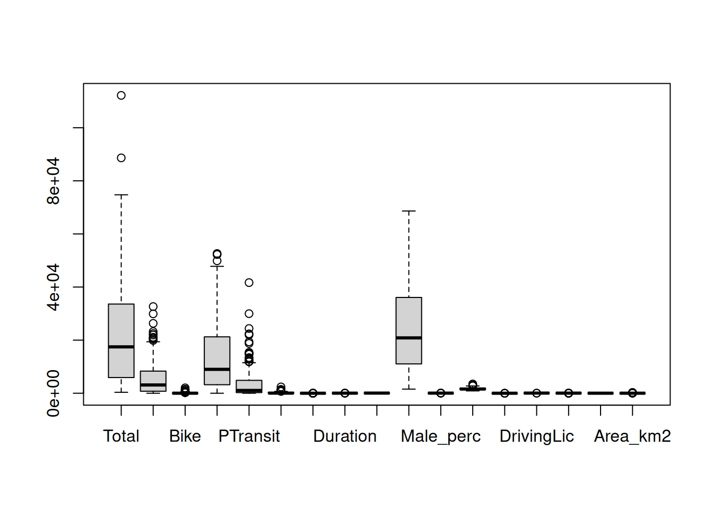
hist(data_continuous$Total) # histogram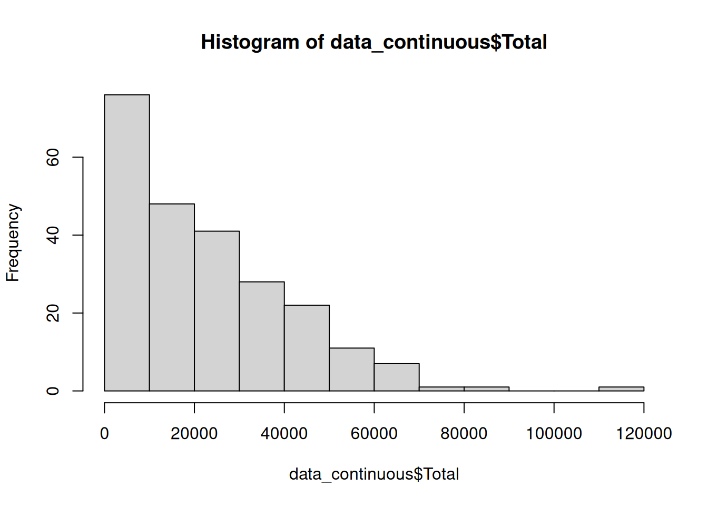
boxplot(data_continuous$Total) # outliers detected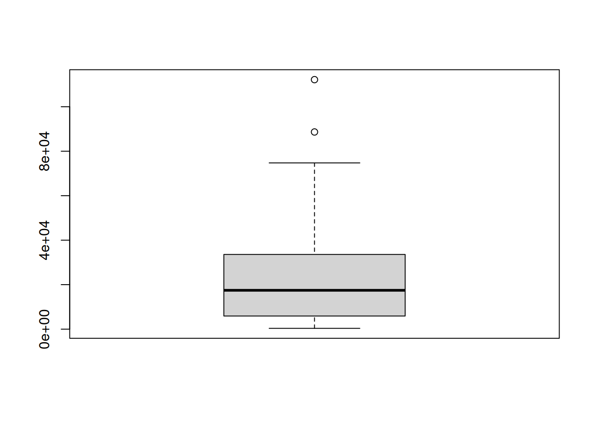
5.6.1 Treating outliers
Based on the theory, we can create a function to detect the outliers.
outlier = function(x) {
q = quantile(x, probs = c(0.25, 0.75), na.rm = TRUE) # Q1 and Q3
caps = quantile(x, probs = c(0.05, 0.95), na.rm = TRUE) # 5th and 95th percentile
H = 1.5 * IQR(x, na.rm = TRUE) # interquartile range
case_when(
x < (q[1] - H) ~ caps[1], # replace values that are LESS than Q1-1.5*IQR with the P5 value
x > (q[2] + H) ~ caps[2], # replace values that are MORE than Q3+1.5*IQR with the P95 value
TRUE ~ x # otherwise, return the original value
)
}Now, use it in a copy of the table
data_outliers = data_continuous # duplicate the table
data_outliers$Total = outlier(data_outliers$Total) # Use the function to the same variableTake a look again at the boxplot
boxplot(data_outliers$Total)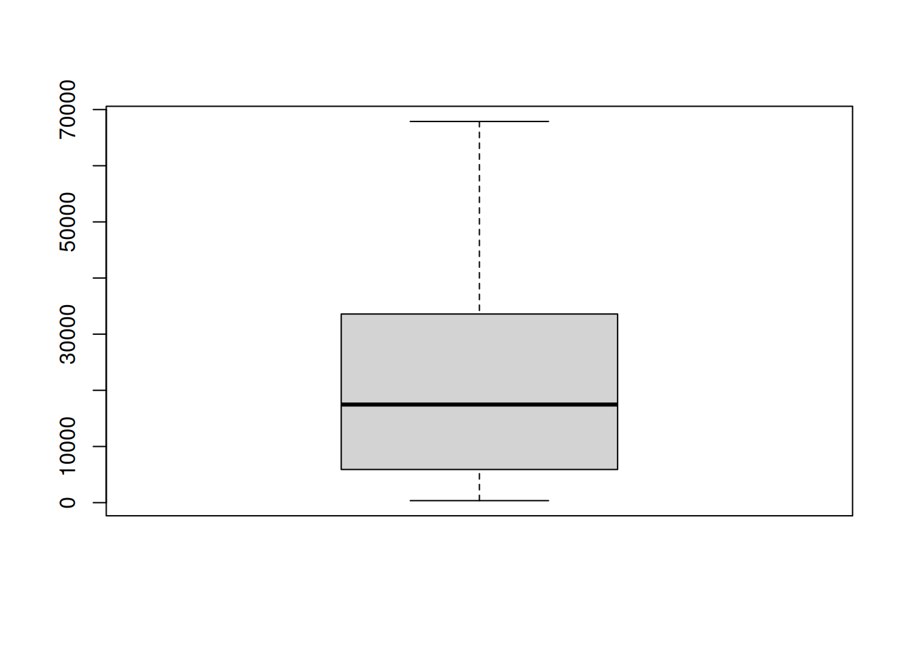
Compare the variable with and without the outliers
# Mean
mean(data$Total)[1] 22457mean(data_outliers$Total)[1] 22013.51# Median
median(data$Total)[1] 17474median(data_outliers$Total)[1] 17474# Standard deviation
sd(data$Total)[1] 19084.45sd(data_outliers$Total)[1] 17739.39
Note
There are many methods to treat outliers. This is just one of them.
5.7 Histograms
Plot histograms of all the continuous variables
plot_histogram(data, ncol = 3) # histograms with 3 columns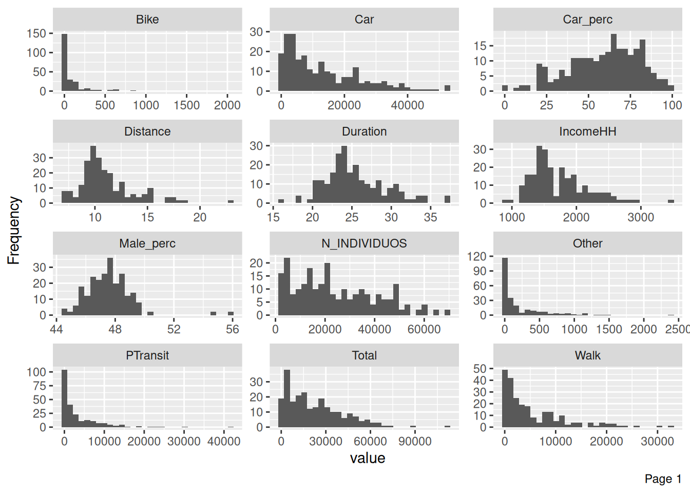
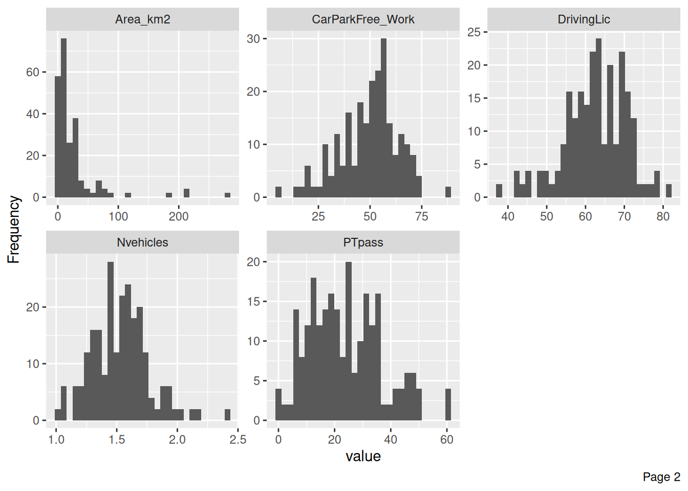
plot_density(data, ncol = 3) # density plots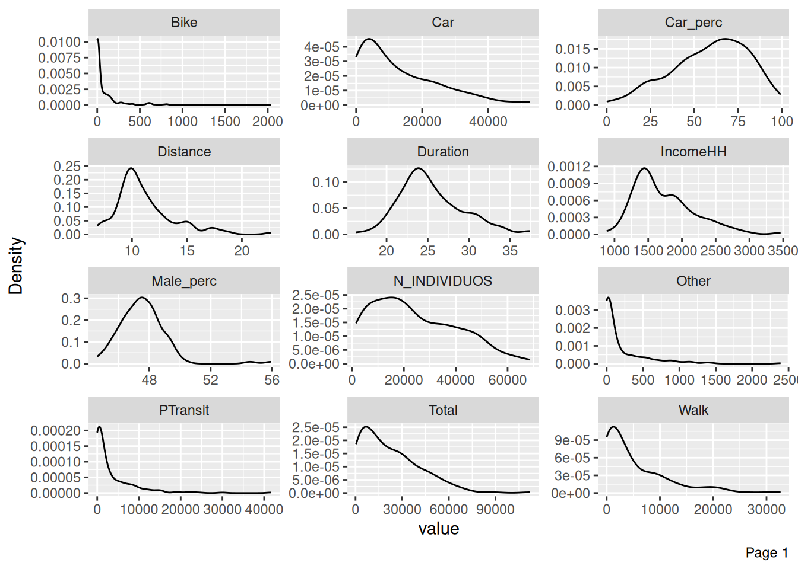
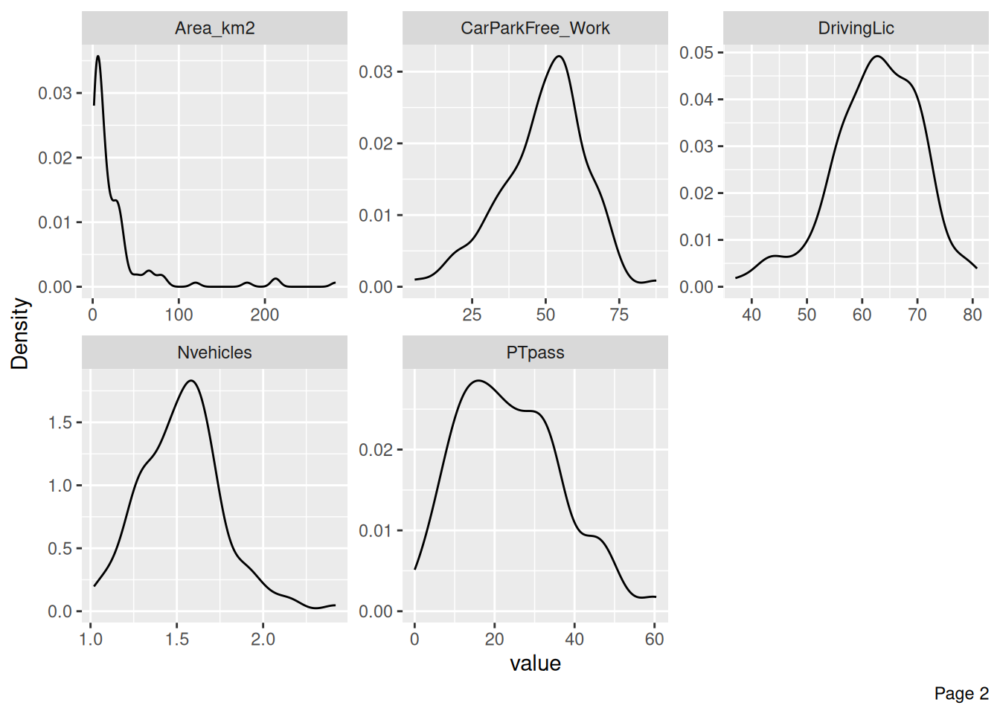
Check how other variables are distributed regarding Car_perc
plot_boxplot(data, by = "Car_perc", ncol = 3)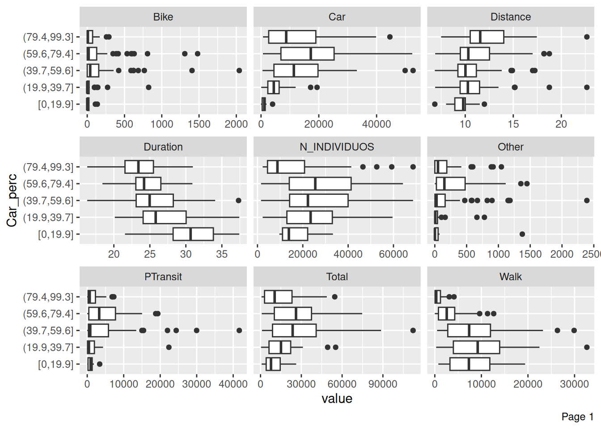

Note
When Car_perc increases, PTpass decreases.
Exercise
Try plotting the boxplots of each independent variable with Car_perc.
5.8 Correlations
Plot correlation heatmaps, between continuous variables.
# estimate correlation matrix
corrmat = cor(data_continuous, method = "pearson") |> round(2)
corrmat Total Walk Bike Car PTransit Other Distance Duration
Total 1.00 0.49 0.44 0.93 0.78 0.48 -0.36 0.10
Walk 0.49 1.00 0.27 0.21 0.09 -0.01 -0.34 0.03
Bike 0.44 0.27 1.00 0.41 0.26 0.11 0.00 0.08
Car 0.93 0.21 0.41 1.00 0.70 0.47 -0.29 -0.03
PTransit 0.78 0.09 0.26 0.70 1.00 0.58 -0.20 0.36
Other 0.48 -0.01 0.11 0.47 0.58 1.00 -0.09 0.22
Distance -0.36 -0.34 0.00 -0.29 -0.20 -0.09 1.00 0.16
Duration 0.10 0.03 0.08 -0.03 0.36 0.22 0.16 1.00
Car_perc 0.01 -0.53 0.00 0.27 0.01 0.09 0.26 -0.40
N_INDIVIDUOS 0.72 0.56 0.29 0.68 0.28 0.20 -0.46 -0.11
Male_perc -0.38 -0.32 -0.14 -0.33 -0.20 -0.08 0.39 -0.01
IncomeHH 0.25 0.04 0.22 0.26 0.23 0.10 -0.09 0.30
Nvehicles -0.16 -0.25 0.00 -0.02 -0.21 -0.14 0.27 -0.26
DrivingLic -0.01 -0.12 0.08 0.08 -0.10 -0.09 0.23 -0.12
CarParkFree_Work -0.26 -0.29 -0.03 -0.08 -0.38 -0.25 0.30 -0.53
PTpass 0.25 0.23 0.01 0.09 0.39 0.21 -0.36 0.55
Area_km2 -0.15 -0.15 0.03 -0.08 -0.19 -0.09 0.23 -0.25
Car_perc N_INDIVIDUOS Male_perc IncomeHH Nvehicles DrivingLic
Total 0.01 0.72 -0.38 0.25 -0.16 -0.01
Walk -0.53 0.56 -0.32 0.04 -0.25 -0.12
Bike 0.00 0.29 -0.14 0.22 0.00 0.08
Car 0.27 0.68 -0.33 0.26 -0.02 0.08
PTransit 0.01 0.28 -0.20 0.23 -0.21 -0.10
Other 0.09 0.20 -0.08 0.10 -0.14 -0.09
Distance 0.26 -0.46 0.39 -0.09 0.27 0.23
Duration -0.40 -0.11 -0.01 0.30 -0.26 -0.12
Car_perc 1.00 -0.09 0.18 -0.07 0.40 0.33
N_INDIVIDUOS -0.09 1.00 -0.46 0.14 -0.14 0.00
Male_perc 0.18 -0.46 1.00 -0.34 0.19 -0.11
IncomeHH -0.07 0.14 -0.34 1.00 0.23 0.22
Nvehicles 0.40 -0.14 0.19 0.23 1.00 0.44
DrivingLic 0.33 0.00 -0.11 0.22 0.44 1.00
CarParkFree_Work 0.53 -0.19 0.26 -0.01 0.54 0.39
PTpass -0.52 0.20 -0.34 0.16 -0.44 -0.45
Area_km2 0.25 -0.19 0.30 -0.18 0.12 0.10
CarParkFree_Work PTpass Area_km2
Total -0.26 0.25 -0.15
Walk -0.29 0.23 -0.15
Bike -0.03 0.01 0.03
Car -0.08 0.09 -0.08
PTransit -0.38 0.39 -0.19
Other -0.25 0.21 -0.09
Distance 0.30 -0.36 0.23
Duration -0.53 0.55 -0.25
Car_perc 0.53 -0.52 0.25
N_INDIVIDUOS -0.19 0.20 -0.19
Male_perc 0.26 -0.34 0.30
IncomeHH -0.01 0.16 -0.18
Nvehicles 0.54 -0.44 0.12
DrivingLic 0.39 -0.45 0.10
CarParkFree_Work 1.00 -0.66 0.32
PTpass -0.66 1.00 -0.41
Area_km2 0.32 -0.41 1.00# store the results so you can call the p-value at the corrplot
res = cor.mtest(data_continuous, conf.level = .95)
corrplot(
corrmat,
method = "color", # or "circle"
p.mat = res$p,
sig.level = 0.05,
type = "upper", # display only the upper triangular
# order = "hclust", # order by hierarchical clustering
tl.col = "black" # text label color
)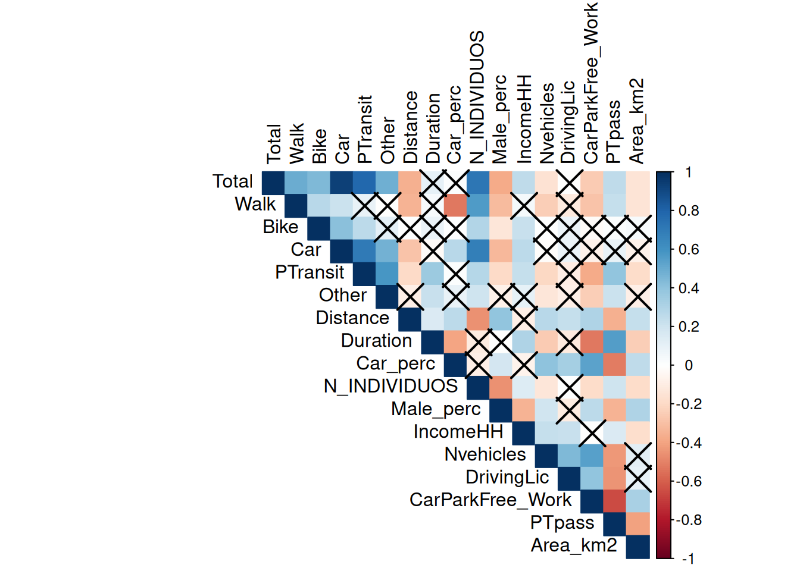
Note
The pairwise correlations that are crossed are statistically not significant. The null hypothesis (H0) is that correlation is zero. The alternative hypothesis (HA) is that correlation is not zero.
This means that the correlations are only significant when you reject the null hypothesis (p-value < 0.05).
Other method, using the DataExplorer package
plot_correlation(data_continuous)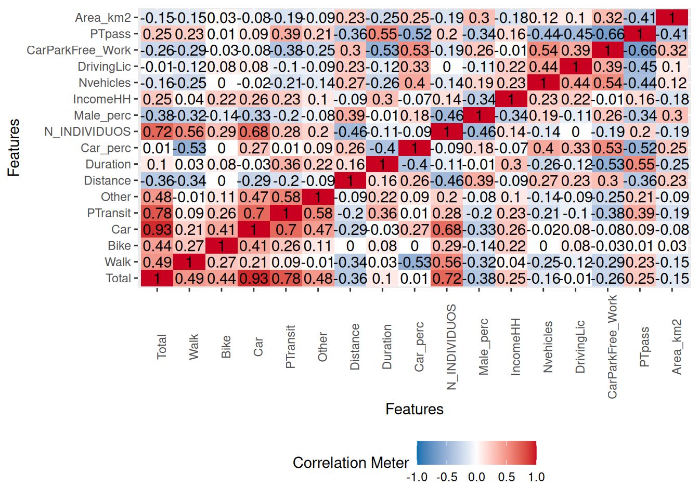
Check the p-value of a crossed pair correlation:
cor.test(data$IncomeHH, data$Bike)
Pearson's product-moment correlation
data: data$IncomeHH and data$Bike
t = 3.5261, df = 234, p-value = 0.0005074
alternative hypothesis: true correlation is not equal to 0
95 percent confidence interval:
0.09977779 0.34249284
sample estimates:
cor
0.2246163 cor.test(data$IncomeHH, data$Duration)
Pearson's product-moment correlation
data: data$IncomeHH and data$Duration
t = 4.817, df = 234, p-value = 2.62e-06
alternative hypothesis: true correlation is not equal to 0
95 percent confidence interval:
0.1795420 0.4122446
sample estimates:
cor
0.300356 cor.test(data$Distance, data$Duration)
Pearson's product-moment correlation
data: data$Distance and data$Duration
t = 2.4605, df = 234, p-value = 0.0146
alternative hypothesis: true correlation is not equal to 0
95 percent confidence interval:
0.0317533 0.2808153
sample estimates:
cor
0.1588098 The default for cor.test is Pearson, two-sided, with a 95% confident level. Check ?cor.test for more options.